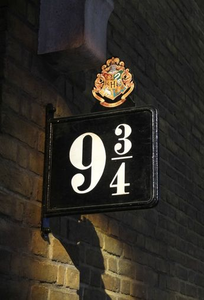
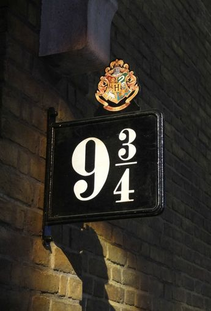

Неймовірні факти
Факт 1: Дж. К. Роулінг придумала ідею про Гаррі Поттера в поїзді між Манчестером і Лондоном.
Факт 2: Актор, що зіграв Волдеморта, Рейф Файнс, мав спеціальний носовий грим для створення його образу.
Факт 3: Герміона мала бути донькою стоматологів — це дійсно так в книзі!
Факт 4: Назви факультетів спочатку були іншими — Дж. К. Роулінг змінила їх в останній момент.

 
